Laporan Temuan Bug & Rekomendasi UX
Kompilasi temuan bug fungsional, celah UI/UX, dan kendala teknis yang ditemukan selama pengujian menyeluruh pada platform BelajarPlus.id. Dilengkapi dengan langkah reproduksi, tingkat keparahan (*severity*), dan rekomendasi perbaikan teknis untuk tim developer.
Nomor Rekening Bank Ditampilkan Strip (—) pada Rincian Transfer Manual
Ketika siswa/orang tua memilih buku dan melakukan checkout metode Transfer Bank Manual, kartu detail pesanan memuat rincian nominal dan nomor pesanan, tetapi kolom nama bank dan nomor rekening tujuan hanya menampilkan tanda strip (—). Akibatnya, orang tua tidak dapat mentransfer uang dan pesanan buku tertahan tanpa ada kejelasan kontak.
- Buka menu
/shop, pilih varian buku (misal Cetak atau Digital), masukkan keranjang. - Lanjutkan checkout hingga tahap konfirmasi pesanan (`/orders/[id]`).
- Amati kartu "Informasi Rekening Pembayaran". Field Rekening hanya berisi teks strip (
-).
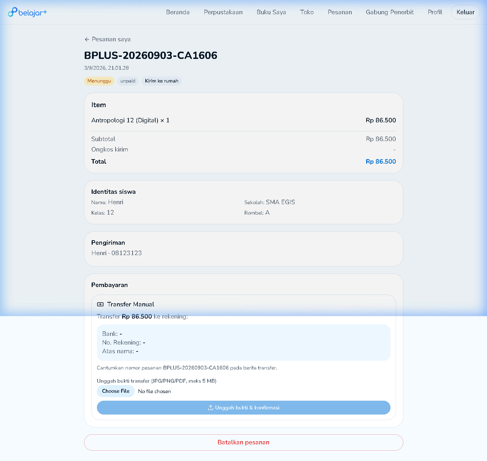
Infinite Loading Spinner saat Menjalankan Ujian dengan 0 Soal
Jika seorang guru mempublikasikan penugasan/ujian LJD yang bank soalnya masih kosong (0 butir soal), siswa yang mengklik tombol "Kerjakan" akan mengalami infinite loading. Halaman hanya menampilkan spinner berputar terus-menerus tanpa batas waktu (timeout) dan tidak ada tombol kembali, memaksa siswa menutup paksa browser.
- Guru membuat paket tugas tanpa menginput butir soal.
- Siswa masuk ke tab Penugasan kelas dan klik tombol "Kerjakan".
- Layar memuat `ljd_engine` dan berputar tanpa henti tanpa memunculkan pesan error.
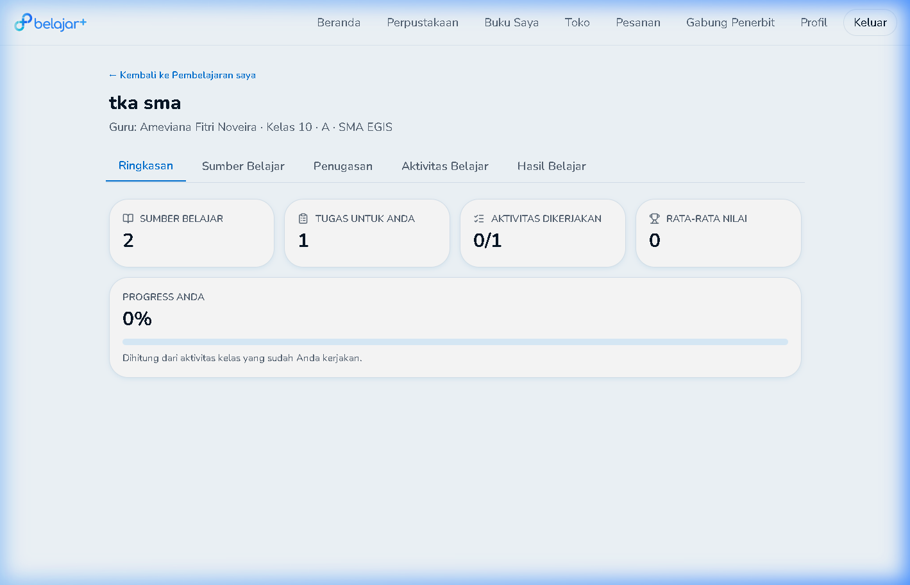
Search Bar Perpustakaan Me-reset Teks Saat Menekan Tombol Dropdown
Saat pengguna mengetik kata kunci pencarian judul buku di kolom search bar navigasi atas, lalu mengeklik tombol aksi *"Jelajahi & filter"* pada dropdown pop-up yang muncul, nilai input teks di kolom pencarian tiba-tiba hilang (ter-reset menjadi kosong) sehingga hasil pencarian tidak terfilter dengan tepat.
- Buka halaman
/library. - Ketik kata kunci (misal: "Biologi" atau "Antropologi") di kotak pencarian atas.
- Klik tombol pop-up saran / "Jelajahi & filter".
- Teks yang diketik hilang dan filter URL gagal mengambil nilai query.
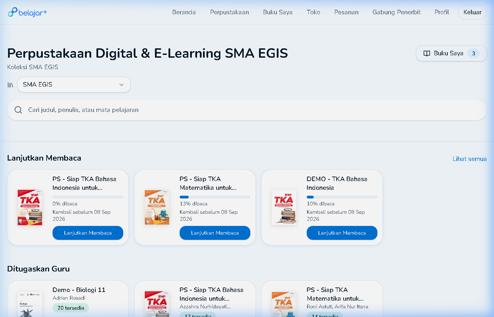
Indikator Pelanggaran Anti-Cheat Melampaui Batas Toleransi Tanpa Konsekuensi Eksplisit
Sistem pengawas anti-cheat BelajarPlus menampilkan indikator pelanggaran di header atas dengan format rasio (contoh: Pelanggaran 8/3). Secara logika, angka 3 adalah batas maksimal toleransi. Namun sistem membiarkan angka menembus hingga 8 tanpa auto-submit atau warning dialog yang jelas, membuat siswa bingung apakah status ujiannya sah atau sudah didiskualifikasi.
- Buka ujian LJD yang memiliki proteksi tab focus aktif.
- Pindah tab atau buka aplikasi lain beberapa kali.
- Counter pelanggaran terus bertambah melampaui denominator (contoh: 8/3) tanpa interupsi sistem.
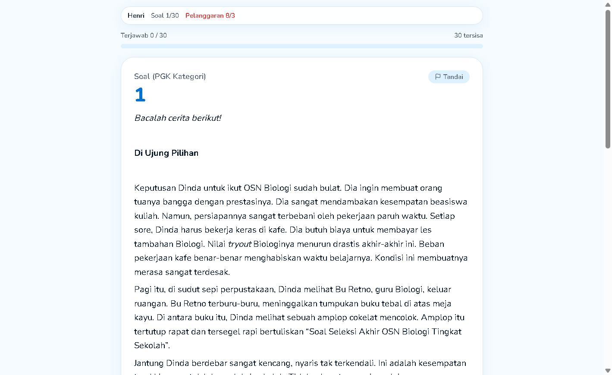
Desinkronisasi Badge Jumlah Tab dengan Daftar Kartu Buku di "Buku Saya"
Pada menu Buku Saya, angka badge di tab (contoh: tab "Dipinjam (3)") terkadang tidak cocok dengan jumlah kartu buku yang ter-render di bagian bawah (hanya muncul 2 buku). Hal ini terjadi karena *optimistic UI update* atau *stale cache* yang tidak me-refresh daftar koleksi saat ada buku yang baru dikembalikan atau habis masa pinjamnya.
- Pinjam atau kembalikan buku dari reader/koleksi.
- Navigasi ke menu `/my-books`.
- Angka indikator tab tidak sinkron dengan kartu di container bawah sebelum pengguna melakukan refresh manual (F5).
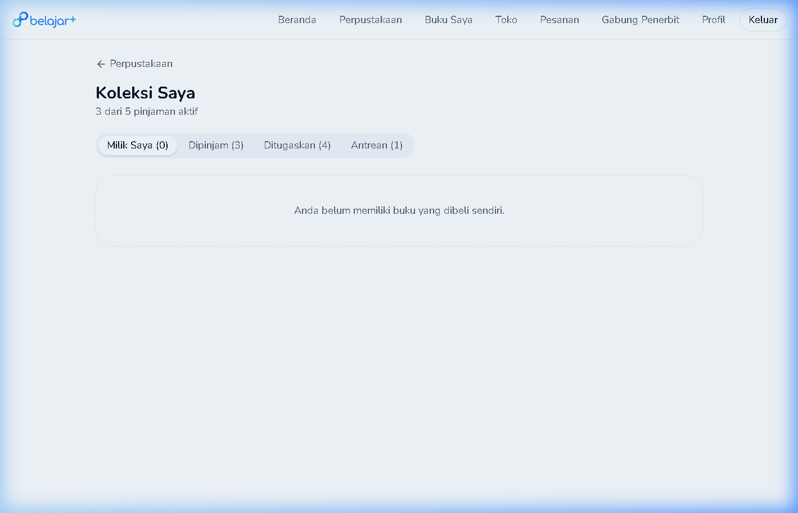
Redirect Loop Sesi Login saat Mengakses Tautan Langsung `/orders`
Ketika pengguna yang sudah berada dalam status login mencoba mengetikkan URL belajarplus.id/orders langsung di bilah alamat browser atau me-refresh halaman tersebut, middleware autentikasi terkadang menganggap sesi belum ter-inisialisasi dan me-redirect ke halaman `/auth`, lalu kembali ke `/orders` secara berulang (redirect loop).
- Login sebagai siswa di BelajarPlus.
- Buka tab baru atau ketikkan `belajarplus.id/orders` langsung di URL bar.
- Browser mengalami kedip reload beberapa kali antara `/auth` dan `/orders`.
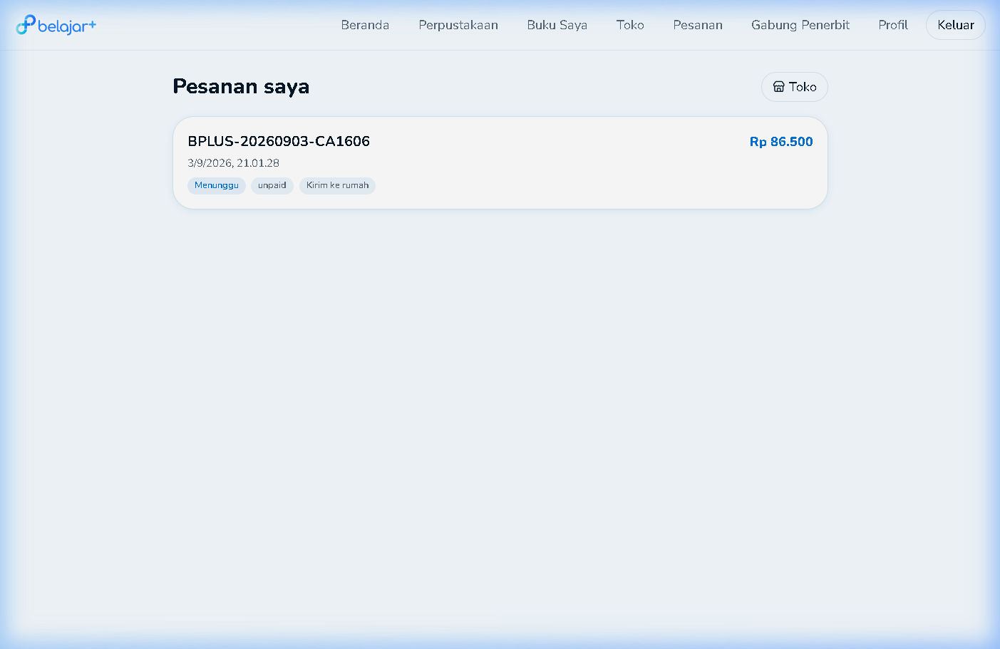
Typo Penulisan Judul Ujian ("Sumlasi TKA 2") pada Layar Skor Evaluasi
Pada halaman transkrip hasil pengerjaan LJD siswa, judul paket simulasi tertulis typo secara baku: "Sumlasi TKA 2" (kurang huruf 'i' untuk kata Simulasi). Walaupun tidak merusak fungsi tombol, hal ini mengurangi kredibilitas dan kerapian estetika platform di mata sekolah mitra.
- Selesaikan penugasan atau buka riwayat hasil penugasan LJD.
- Perhatikan judul besar di bawah rekap nama siswa. Tertulis: "Sumlasi TKA 2".
"Sumlasi TKA 2" menjadi "Simulasi TKA 2".
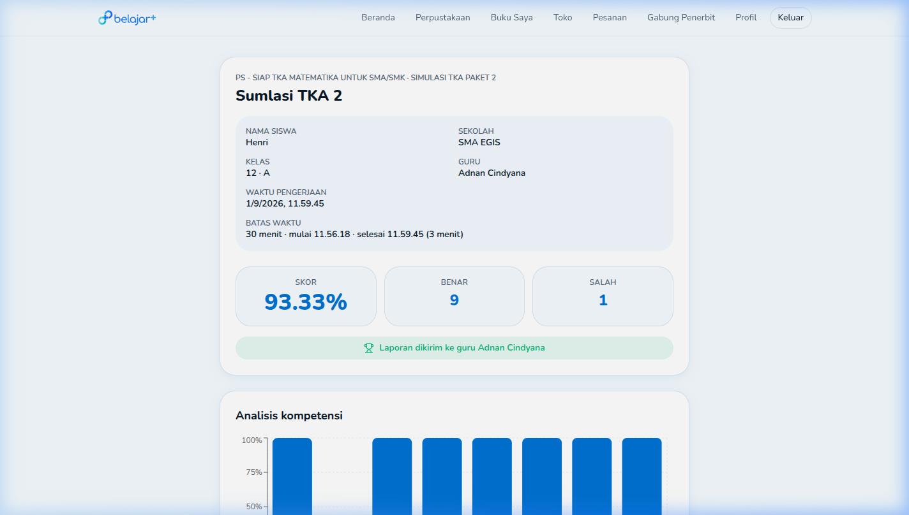
Coretan & Catatan Whiteboard E-Reader Tidak Tersimpan (Data Loss saat Tab Ditutup)
Ketika siswa mencatat rumus, coretan pembahasan guru, atau memberi stabilo pada halaman e-book menggunakan fitur Whiteboard, kanvas gambar tidak memiliki mekanisme penyimpanan ke database profil akun ataupun localStorage browser. Saat halaman di-refresh atau browser ditutup, seluruh coretan hilang permanen dan memaksa pengguna mengunduh file secara manual satu per satu.
- Buka e-reader pada buku apa saja, klik ikon "Whiteboard" di toolbar bawah.
- Buat coretan penjelasan atau stabilo teks materi pada halaman 5.
- Lakukan refresh browser (F5) atau tutup tab lalu buka kembali.
- Coretan kanvas hilang total tanpa jejak.
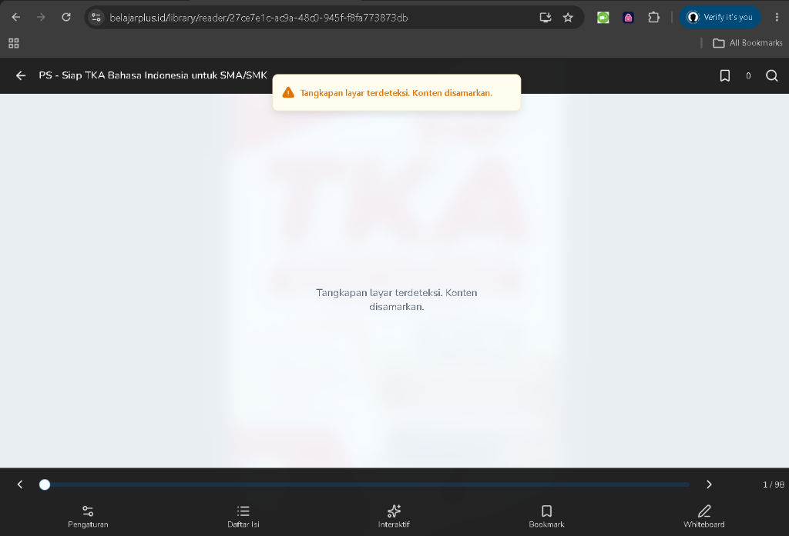
Siswa Tidak Memiliki Opsi Mandiri untuk Keluar dari Kelas yang Salah Rombel
Jika seorang siswa salah mengetikkan 6-digit Kode Kelas (contoh: siswa 12-IPA salah memasukkan kode kelas 12-IPS), tidak ada tombol "Tinggalkan Kelas" atau "Batal Bergabung" pada kartu kelas siswa. Siswa terjebak di kelas yang salah, otomatis menerima tugas dan jadwal ujian yang tidak sesuai, serta merepotkan guru karena harus dikeluarkan manual dari dashboard guru.
- Input kode kelas `BLJ-XXXXXX` milik rombel kelas lain.
- Kartu kelas muncul di dashboard siswa.
- Buka kartu kelas / opsi menu: tidak ditemukan opsi keluar atau batalkan kelas.
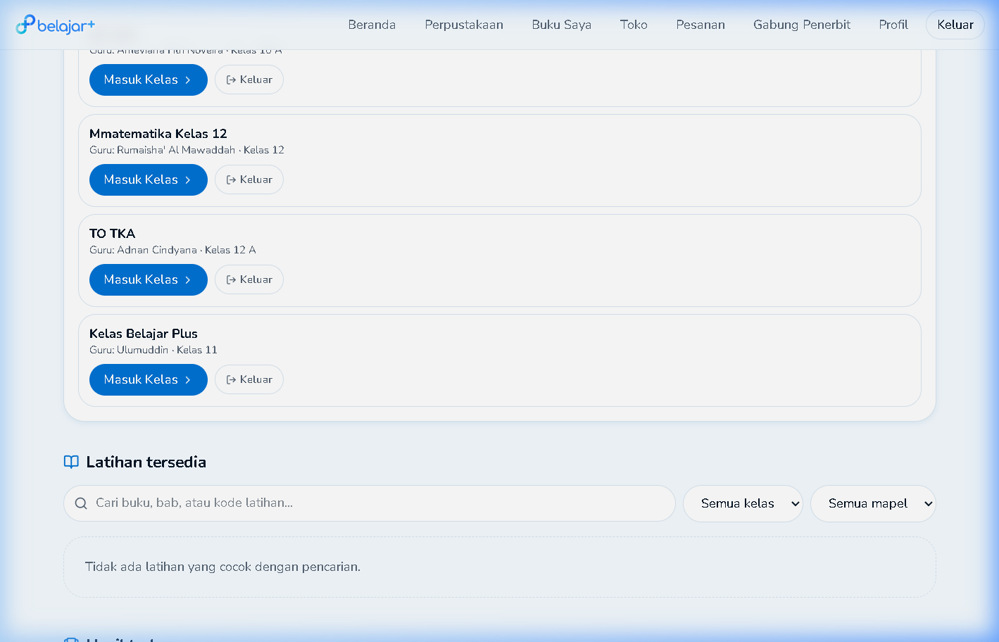
Countdown Timer Menghilang pada Halaman Tinjau Jawaban LJD
Ketika siswa menekan tombol "Ke halaman tinjau" untuk memeriksa butir-butir soal yang masih kosong sebelum pengiriman akhir, indikator hitung mundur waktu (countdown timer) tidak ditampilkan di bilah header atas (hanya tertulis nama siswa dan posisi soal). Siswa yang sedang memeriksa sisa nomor tidak menyadari waktu tersisa, sehingga rawan terkena auto-submit paksa secara mendadak.
- Kerjakan ujian LJD, jawab beberapa soal.
- Klik tombol biru "Ke halaman tinjau" di bawah kotak navigator nomor.
- Amati header halaman tinjau: countdown jam/menit/detik tidak terpasang.
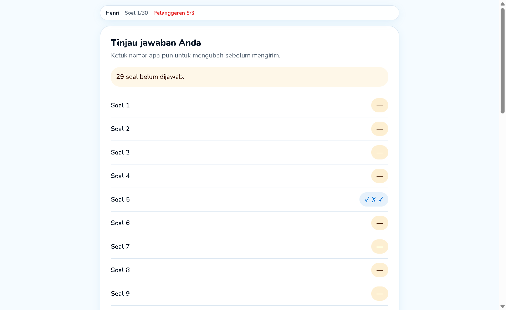
Katalog Toko Tetap Menawarkan Buku yang Sebenarnya Tersedia Gratis di Perpustakaan Sekolah
Banyak buku pelajaran dan modul TKA yang kuota lisensi digitalnya telah dibayar oleh sekolah mitra dan dapat dipinjam 100% gratis oleh siswa di menu Perpustakaan. Namun saat siswa membuka menu Toko, buku yang sama tetap dipajang untuk dibeli tanpa ada peringatan: "Buku ini sudah tersedia gratis di perpustakaan sekolahmu". Ini memicu potensi orang tua mengeluarkan biaya yang tidak perlu.
- Cari buku wajib sekolah di menu `/library` (status: Tersedia untuk dipinjam gratis).
- Buka menu `/shop`, cari judul buku yang sama.
- Tombol "+ Keranjang" dan "Beli Sekarang" tetap aktif tanpa banner deteksi lisensi sekolah.
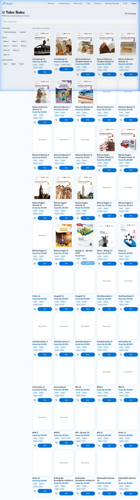
Ketiadaan Validasi Client-Side Format & Ukuran File Bukti Pembayaran
Form unggah bukti transfer manual di halaman detail pesanan tidak membatasi ekstensi file pada tag input (`accept`) dan tidak memverifikasi ukuran berkas sebelum tombol diklik. Pengguna HP yang memotret struk dengan resolusi tinggi (> 5 MB) atau format HEIC baru mendapati proses gagal setelah menunggu lama (*HTTP 413 Payload Too Large* atau *Internal Server Error*).
- Buat pesanan transfer manual di Toko.
- Pada tombol "Pilih file", pilih file gambar mentah kamera ponsel (> 6 MB).
- Klik "Unggah bukti & konfirmasi". Tidak ada pesan validasi instan, request langsung macet/gagal.
Ketiadaan Shortcut "Kembalikan Buku" saat Siswa Selesai Membaca Halaman Terakhir
Saat siswa selesai membaca e-book sampai halaman terakhir (misal: halaman `98/98`), e-reader tidak menampilkan pop-up konfirmasi: "Bagus! Kamu sudah menyelesaikan buku ini. Kembalikan sekarang agar teman lain bisa meminjam?". Siswa harus keluar ke dashboard, buka menu Buku Saya, cari kartu buku, lalu klik tombol Kembalikan. Karena alurnya berbelit, mayoritas siswa membiarkan buku begitu saja hingga masa 14 hari kedaluwarsa, memicu antrean pinjam menumpuk di sekolah.
- Buka e-reader dan geser slider ke halaman terakhir buku (misal: hal 98).
- Tombol panah "Selanjutnya" hanya berstatus disabled tanpa opsi tindakan lanjutan.
- Tidak tersedia jalan pintas untuk mengembalikan buku dari dalam e-reader.
Grafik Analisis Kompetensi Hasil Ujian Tidak Memiliki Label Indikator Soal
Pada lembar evaluasi hasil pengerjaan ujian LJD, grafik batang "Analisis kompetensi" hanya menyajikan 8 bar vertikal warna biru persentase 0-100% tanpa keterangan teks label Kompetensi Dasar (KD) ataupun tooltip hover. Siswa dan guru tidak bisa mengetahui materi atau indikator soal mana yang diwakili oleh batang bar yang nilainya jeblok.
- Buka transkrip nilai hasil pengerjaan LJD siswa.
- Scroll ke bawah ke panel "Analisis kompetensi".
- Arahkan kursor atau klik pada batang grafik: tidak ada label teks materi maupun tooltip rincian indikator.
Ketiadaan Indikator Kekuatan Kata Sandi (Password Strength Meter) saat Registrasi
Pada formulir pendaftaran akun baru, kotak isian Kata Sandi tidak memiliki petunjuk kriteria kompleksitas yang valid (apakah wajib ada angka, huruf kapital, atau tanda baca simbol) serta tidak ada bar indikator kekuatan password secara realtime. Calon pengguna sering mengalami frustrasi karena formulir ditolak oleh server berulang kali tanpa kejelasan aturan password.
- Buka halaman `/auth` tab "Daftar".
- Ketik password di kolom kata sandi.
- Tidak ada checklist atau bar warna yang menunjukkan apakah password memenuhi kriteria sebelum tombol submit ditekan.